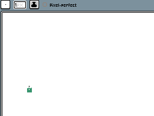
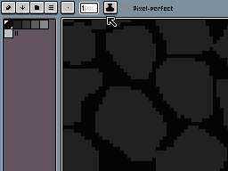
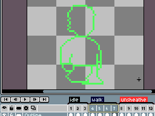

用 Aseprite 从 0 画一张能跳的像素小人——新手实操全流程
从下载安装到导出 GIF，带你手把手走完 Aseprite 的像素画制作全链路。常见卡点和解法都在里面，按步骤走不会翻车。
这篇教程能帮你做什么
跟着走完这篇，你能用 Aseprite 独立完成：画一个像素小人 → 给它做走路循环动画 → 导出成可在任何地方播放的 GIF。不要求你有绘画基础，也不要求你懂动画原理——只要会点鼠标、会按快捷键就行。
准备工作
版本和平台
Aseprite 的官网提供了桌面版和安卓端，本教程以桌面版为主（Windows / macOS 都适用），快捷键统一标注。如果你只有安卓设备，步骤逻辑完全一致，操作换成触屏即可。
软件安装有三种方式：Steam 购买最省心、Aseprite下载直接拿安装包、或者从源码自编译。免费的自编译路线适合有 C++ 基础的玩家，否则推荐直接在 Steam 买，19.99 美元，国区偶尔有打折。桌面版第一次启动需要创建 Aseprite 账号绑定 Steam，之后就能在任意设备登录。
桌面版默认是英文界面，要切中文的话：打开 Edit → Preferences → General，点 "Download Translations"，选 Simplified Chinese 下载，重启就生效了。安卓端内置中文，装上直接用。
前置条件
不需要懂美术、不需要装额外插件。唯一的硬性要求是：把 Aseprite 装到电脑上并且能正常打开。如果启动就闪退，先在偏好设置里点 Reset 重置一下，再检查显卡驱动是不是最新版。
第一步：新建画布，画一个像素小人
打开 Aseprite，Ctrl+N 新建文件。画布大小选 32×32 像素——这是像素画最经典的起步尺寸，一张小图，刚好够画一个角色。

1.1 先开网格和 Pixel Perfect
画之前点两个开关：
- 菜单栏 View → Show → Grid，打开网格。画布会被分成一格一格的小方块，帮你对准落笔位置。新手全程开着，熟练了再关。
- 工具栏上找到 Pixel Perfect 图标（看起来像两格对齐的方块），点开。这个模式下你的线条会自动"粘"到像素格上，不会画出半格的毛刺。
1.2 用形状工具打轮廓
不要直接拿铅笔瞎描——效率太低。先按 U 切换到形状工具，Shift+U 在矩形/椭圆之间循环选矩形。然后：
- 画身体：一个 8×12 的矩形，居中偏下
- 画头：一个 8×8 的矩形，接在身体上方
- 画胳膊腿：各画两个 2×6 的细矩形
注意，形状工具默认是描边模式，按 F 键或再按两下 U 切换成填充模式。按 Shift 可以画出正圆（如果你想画个圆脑袋的话）。
打完轮廓后，用铅笔（P 键）手动修掉不满意的格子——比如把矩形的直角磨圆、把胳膊末端调细。这一步是"起粗稿"，糙一点没关系，后面会精修。
1.3 填色：油漆桶 + 手动修
按 G 切换到油漆桶。油漆桶只填封闭区域——这是新手最容易翻车的点：轮廓有任何一处小缺口，颜色会瞬间漏到整个画布。所以填之前先放大（Ctrl++）仔细看轮廓有没有断点。
从调色板选颜色。别随手调新颜色，先选一个基色——比如皮肤用浅肉色、衣服用深蓝色。油漆桶容差保持 0，一笔填完一个区域。
填完色后，用I 键吸色（或者 Ctrl+左键点击画布临时取色），从画布上已有的颜色里继续取，保持配色统一。不要随手点调色板里的新颜色，调色板越画越杂 = 画面变脏。
1.4 用 Shading Ink 做简单光影
Aseprite 有个叫 Shading Ink 的工具，像素画里独一份好用。它让你选一个基色，按光源方向自动生成明暗色阶，拖几下就能出光影感。
原理很简单：像素画的光影不是画影子，而是用不同明度的同色系叠加来制造立体感。操作步骤：
- 在工具栏 Brush Settings 面板里切换到 Shading Ink
- 点调色板上你刚选的衣服颜色作为基色
- 光源方向选左上 45°——这是行业惯例，所有人都这么用，画面里所有物体的光影逻辑才统一
- 光标朝光源方向拖（右上）= 变亮；反方向拖（左下）= 变暗

铺光影底色很快，但 Shading Ink 只适合大面积铺底。等下你要给鼻子下面画小阴影、给头发丝画高光，这些精细活还是得回到铅笔手动画。
1.5 精修：关掉洋葱皮，画细节
画细节的时候把之前开的洋葱皮关掉（如果开着的话）——半透明的前后帧影子会干扰你看清当前帧的像素细节。Ctrl+滚轮放大到能看清每一格像素，然后：
- 用铅笔补眼睛：两个小黑点 + 两个小白点做高光
- 用橡皮（E 键）擦去多余的像素
- 用吸色+Shading Ink 把衣服的阴影过渡调均匀
画完按 Ctrl+S 保存，文件格式选 .aseprite——这是 Aseprite 的原生格式，保留所有图层和动画数据，随时可以回来改。
第二步：做一个走路循环动画
静态的小人不够，我们给它加一个四帧走路循环。
2.1 创建动画帧
现在你的画布只有 1 帧。在时间轴面板（底部那个横条）上：
- 选中第 1 帧，按 Ctrl+D 复制三次，一共 4 帧
- 或者点时间轴面板右下角的 "+" 按钮手动新建
2.2 开洋葱皮，逐帧改动作
按 F3 或分号键打开洋葱皮。时间轴工具栏上那个"几层叠起来的方块"图标就是它。
洋葱皮会把前后相邻帧以半透明影子叠在当前画面上，红色描边表示前一帧，蓝色表示后一帧。默认显示前后各 2 帧，这个数量刚好够用。
走路循环的四帧动作是：
- 帧 1：双腿并拢，双臂自然下垂（起始姿态）
- 帧 2：右腿前迈一点，左腿后一点，胳膊跟着摆动
- 帧 3：双腿并拢，和帧 1 一样（中间过渡）
- 帧 4：左腿前迈，右腿后摆，和帧 2 对称
改每一帧的时候，洋葱皮帮你确认这一帧该挪多少——比如画帧 2 的右腿，参考帧 1 的位置往前挪 2~3 格就够了，别挪太多不然动作会飘。

关键节奏：每改完一帧，关掉洋葱皮画细节（看清每格像素），再打开洋葱皮检查动幅（确认前后帧衔接自然）。反复几次就出活。
洋葱皮还有 Red/Blue、Grayscale、Merged 三种显示模式，以及按图层设置是否参与洋葱皮的独立开关，完整的参数配置在Aseprite文档里都有详细说明。
2.3 加一个跳跃帧（可选进阶）
想让小人能跳？在时间轴后面再加 2~3 帧，动作逻辑是：
- 身体整体上移 4~6 格
- 膝盖微微弯曲准备落地
- 双臂张开保持平衡
跳跃帧不需要做完整循环，单独放在走路循环的任意位置都行。
2.4 调整帧间隔
在时间轴面板上，每帧底部都有一个数字，默认是 100 毫秒（每秒 10 帧）。走路动画建议调到 80 毫秒稍快一点更自然，跳跃帧可以调到 120 毫秒慢一点有力度。
双击那个数字直接改。
2.5 预览播放
按 空格 或点时间轴面板上的播放按钮预览动画效果。如果走路看着"抽搐"，说明帧间隔调太短；如果像慢动作，把间隔调小。感觉动幅不够，回到对应帧用洋葱皮重新对位。
第三步：导出 GIF
动画做好了，现在把它导出来。
3.1 导出前最后检查
预览一遍动画，确认没有跳帧、没有某个帧画歪了、帧间隔都调好了。然后 File → Save 再存一次。
3.2 选择导出格式
File → Export → 选 GIF 格式。弹出导出设置窗口：
| 设置项 | 推荐值 | 原因 |
|---|---|---|
| Output | GIF | 通用格式，任何地方都能播 |
| Scale | 2× 或 4× | 导出时放大到 64×64 或 128×128，手机上看着更清晰 |
| Frame Delay | 保持各帧原间隔 | 不要统一改成一个值，否则走路会变快或变慢 |
| Loop | Forever | 动画无限循环，走路循环就该这样 |
| Colors | Auto | 让 Aseprite 自动优化调色板 |
3.3 导出完成后的验证
导出完成后，用系统自带的图片查看器打开 GIF 文件，看一遍循环动画正常播放、没有跳帧。如果导出的 GIF 颜色糊了或者有条纹，回去检查调色板设置——可能是自动优化时把颜色合并了。
常见卡点（新手必看）
卡点一：油漆桶填色漏了一画布
原因：轮廓线有肉眼看不见的小缺口——可能是铅笔没连到、也可能是擦除的时候擦掉了一点。
解法：放大到每格像素清晰，Ctrl+Y 撤销油漆桶的操作，用铅笔把轮廓缺口补上，再重新填色。或者用"魔棒"工具（W 键）先选中要填的区域，再用油漆桶填——魔棒选中的区域更精确。
卡点二：洋葱皮的影子和当前帧颜色混在一起
原因：洋葱皮透明度太高（默认 50% 其实还行）或者用了融合模式。
解法：打开 Edit → Preferences → Editor → Onion Skin，把透明度调到 30~40%。模式从 Merged 换回 Red/Blue 描边模式——红色=过去，蓝色=未来，一眼分清。
卡点三：导出的 GIF 颜色变脏或者有条纹
原因：Aseprite 默认调色板只有 32 色，如果你在画的过程中手动加了太多新颜色，导出时 GIF 的 256 色限制会触发颜色量化，产生条纹。
解法：回到调色板，删掉没用的颜色（在调色板面板上右键 → Remove），确保总色数不超过 32。或者用"调色板优化"功能：菜单 Palette → Optimize。
一句话进阶
这篇只教了最基础的静态像素画 + 四帧走路循环。往下可以玩的还有很多：多图层动画（背景层不跟着动、前景层独立动画）、标签系统（Tag 多个帧片段分别导出）、Spritesheet 导出（给游戏引擎用的精灵图）、甚至可以用 Aseprite 的脚本系统批量自动化处理。但这些都建立在你能独立画出这篇教的"能跳的像素小人"之上——把基础动作练熟，进阶自然就顺了。
Aseprite 是开源软件，完整的源码和安装指南都托管在GitHub上，想自己编译最新版或者研究它的实现可以直接去看。如果你更习惯国内的代码托管平台，Gitee和GitCode上也有同步的镜像仓库，下载和浏览起来速度更快。三个仓库的内容完全一致，挑你顺手的那个用就行。